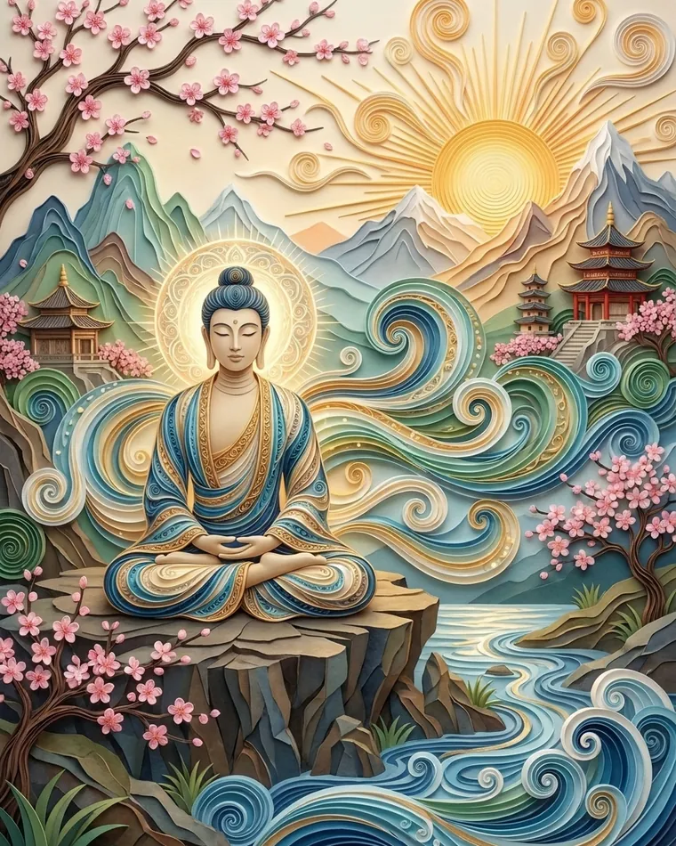
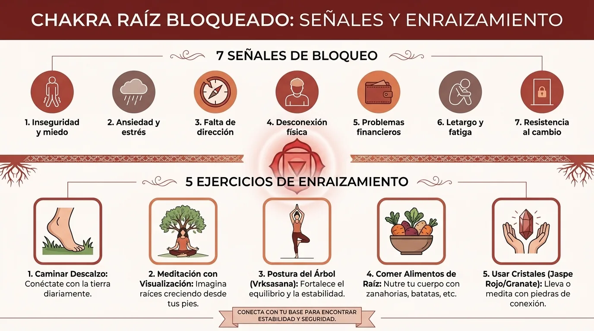
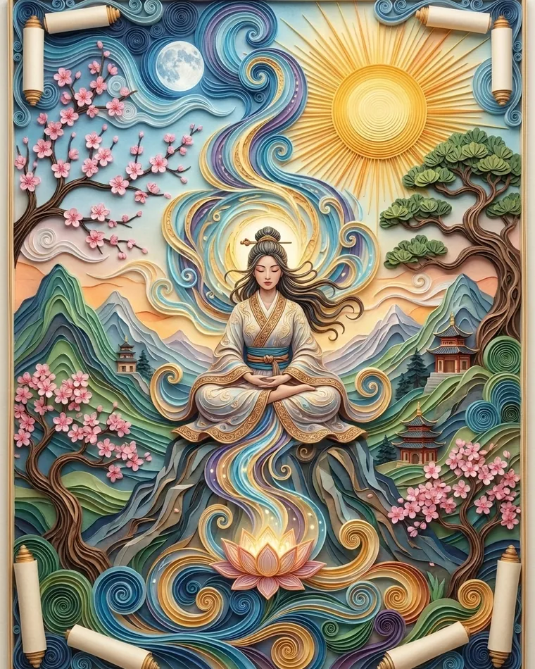

Chakra raíz bloqueado: 7 señales y 5 ejercicios de enraizamiento
¿Inquieto o atrapado en tu cabeza? Descubre 7 señales de un chakra raíz bloqueado, su vínculo con el sistema nervioso y 5 ejercicios para enraizarte.
El chakra raíz: antes de querer abrir el tercer ojo, conviene tener los pies en algún sitio
En la tradición yóguica moderna de los chakras, el chakra raíz, llamado Muladhara, se presenta como el primer centro energético del cuerpo sutil. Se sitúa simbólicamente en la base de la columna vertebral y se asocia al color rojo, al elemento tierra y a todo lo que tiene que ver con la estabilidad, la seguridad, el cuerpo físico, las necesidades básicas y la sensación de tener un lugar en el mundo.
Dicho de otro modo: antes de lanzarte a explorar las alturas de la conciencia, las intuiciones extraordinarias y los estados meditativos sutiles, el chakra raíz te plantea una pregunta mucho menos glamurosa, pero mucho más importante:
¿Me siento lo bastante estable aquí, ahora, en mi cuerpo y en mi vida?
Precisamente por eso las prácticas de chakra raíz, de enraizamiento energético, de meditación de enraizamiento o de grounding siguen siendo tan populares en el yoga, la meditación, las prácticas corporales y algunas corrientes de desarrollo personal.
Eso sí, hay que ser precisos: la ciencia moderna no ha demostrado la existencia anatómica de chakras como centros energéticos medibles.
El chakra raíz pertenece a una cartografía tradicional y simbólica del cuerpo sutil, no a la anatomía médica.
Eso no convierte necesariamente en inútiles las prácticas asociadas a él.
Muchos de los ejercicios llamados de «enraizamiento del chakra raíz» se basan en realidad en mecanismos perfectamente concretos: sentir los pies, ralentizar la respiración, llevar la atención a las sensaciones corporales, caminar, tensar y luego soltar las piernas, sentir la gravedad, observar tu entorno.
En otras palabras, aunque prefieras ver los chakras como una metáfora y no como una realidad energética literal, el enraizamiento corporal sigue siendo una habilidad real.
Y a veces, una habilidad excelente.
Siete señales que suelen asociarse a un chakra raíz «bloqueado»

En las tradiciones energéticas contemporáneas se habla de chakra raíz bloqueado cuando a una persona le cuesta, de forma duradera, sentirse estable, presente, segura o conectada con su cuerpo.
Por supuesto, no se trata de un diagnóstico médico.
Pero hay señales que aparecen una y otra vez.
1. Una ansiedad difusa sin un motivo concreto
No tienes por qué tenerle miedo a algo en particular.
Simplemente tienes la sensación de que algo podría pasar.
Entonces la mente busca una razón para esa tensión:
- el dinero;
- el trabajo;
- la pareja;
- la salud;
- el futuro.
Pero detrás de todos esos escenarios a veces hay una sensación corporal más primitiva:
«No estoy del todo a salvo».
2. Te cuesta quedarte en el momento presente
Tu cuerpo está sentado en una silla.
Tu mente, en cambio, ya está en el martes que viene.
O en 2017.
O en una conversación imaginaria que probablemente nunca va a ocurrir.
Esa tendencia a vivir en tu cabeza es justo lo que muchas técnicas de enraizamiento intentan compensar.
3. Una inquietud corporal constante
Mover la pierna sin parar.
Cambiar de postura.
Mirar el móvil cada treinta segundos.
Saltar de una tarea a otra.
La inquietud no es necesariamente un problema en sí, pero cuando se vuelve permanente puede indicar que al organismo le cuesta, sencillamente, quedarse quieto y asentado.
4. Una fuerte sensación de inseguridad
Necesidad constante de que te tranquilicen.
Dificultad para tolerar la incertidumbre.
La impresión de que todo podría venirse abajo en cualquier momento.
En el lenguaje de los chakras, estas experiencias suelen relacionarse con el chakra raíz porque tocan de lleno la seguridad y la estabilidad.
5. Desconexión de las sensaciones corporales
Hay personas que conocen a la perfección sus pensamientos, pero mucho menos sus sensaciones.
Pregúntales:
«¿Qué sientes en tu cuerpo?».
Respuesta:
«Pienso que…».
Que era, justamente, otra pregunta.
6. Te cuestan los cambios
Cada cambio de planes parece una minicatástrofe.
Cada imprevisto te da la sensación de que el suelo se mueve.
El enraizamiento trabaja precisamente la capacidad de conservar una referencia interna incluso cuando el entorno cambia.
7. Cansancio acompañado de una mente hiperactiva
El cuerpo querría dormir.
El cerebro está organizando un congreso internacional.
Es una combinación muy frecuente en el estrés crónico: el agotamiento físico y la activación mental persisten a la vez.
La interesante relación con el sistema nervioso autónomo
Aunque el chakra Muladhara no sea una estructura biológica reconocida, existe un paralelismo especialmente interesante con los mecanismos de regulación del sistema nervioso autónomo.
Cuando un organismo percibe un peligro o una gran incertidumbre, la atención se orienta de forma natural hacia la amenaza.
El cuerpo puede prepararse para actuar.
La respiración cambia.
El tono muscular aumenta.
El cerebro vigila más el entorno.
Los ejercicios de enraizamiento toman el camino contrario.
Es como si le dijeran al sistema atencional:
«Observa lo que de verdad hay aquí».
El peso de los pies.
El contacto del respaldo.
El suelo.
La temperatura de la habitación.
Un sonido.
Un color.
Una respiración.
Esta estrategia se parece mucho a las técnicas de grounding que se usan en psicología, sobre todo para reducir una activación emocional demasiado intensa o ayudar a alguien a volver a la información sensorial del presente.
Así que el principio no es:
«Voy a reparar mágicamente mi chakra rojo».
Puede ser algo mucho más concreto:
«Voy a salir un momento del guion mental para recuperar la información que me envían mi cuerpo y mi entorno».
Lo cual, reconozcámoslo, ya es una forma estupenda de invertir cinco minutos.

Cinco ejercicios de enraizamiento para el chakra raíz

Ejercicio 1 — Los pies pesados
De pie, con los pies separados al ancho de las caderas.
No visualices nada durante los primeros segundos.
Solo siente:
- el talón;
- la parte delantera del pie;
- los dedos;
- la presión contra el suelo.
Después, lleva el peso suavemente hacia delante.
Hacia atrás.
A la izquierda.
A la derecha.
Vuelve al centro.
Solo entonces imagina que el peso del cuerpo baja todavía más hacia el suelo.
Este ejercicio parece casi demasiado simple.
Justo ahí está su gracia.
La atención sale de la cabeza y vuelve a la gravedad.
Ejercicio 2 — Diez minutos de caminata consciente
Camina despacio, pero sin teatro.
No hace falta que parezcas un monje de documental.
Solo siente:
- el talón que toca el suelo;
- cómo rueda el pie;
- el impulso de los dedos;
- el movimiento de la pelvis;
- el balanceo de los brazos.
Cada vez que la mente se vaya a un problema, vuelve a un paso.
Y luego al siguiente.
La caminata consciente es una de las mejores prácticas de meditación para quienes no soportan quedarse quietos.
Ejercicio 3 — Respiración baja
Pon una mano sobre el vientre.
Inhala con calma.
Observa el leve movimiento del abdomen.
Luego exhala sin forzar.
No intentes respirar «muchísimo».
Busca más bien una respiración suave, baja y cómoda.
Durante cinco minutos, asocia cada exhalación a la sensación de peso.
Ejercicio 4 — El 5-4-3-2-1 sensorial
Mira a tu alrededor y encuentra:
- 5 cosas que ves;
- 4 cosas que puedes tocar;
- 3 sonidos;
- 2 olores;
- 1 sabor o sensación en la boca.
Este método no pertenece históricamente a las tradiciones de los chakras, pero es un ejemplo excelente de grounding sensorial.
Funciona especialmente bien cuando la mente se dispara hacia escenarios ansiosos.
Ejercicio 5 — La postura de la montaña
De pie.
Pies estables.
Rodillas sin bloquear.
Pelvis neutra.
Columna recta.
Hombros relajados.
La coronilla hacia arriba.
La postura de la montaña, Tadasana, parece inmóvil, pero exige muchísima presencia corporal.
Siente a la vez dos direcciones:
- el peso baja;
- la columna se alarga.
Es casi todo el simbolismo del chakra raíz resumido en una postura.
La meditación de enraizamiento de cinco minutos
Siéntate.
Empieza por sentir los pies.
Luego las piernas.
Luego la pelvis.
Durante un minuto entero, no busques nada más.
Después, imagina que tu respiración baja hacia la parte baja del vientre.
Claro que el aire no llega de verdad hasta la pelvis: es una imagen para guiar la atención.
Con cada exhalación, imagina un poco más de peso.
Si quieres, visualiza luego un color rojo oscuro en la base de la pelvis.
Puedes repetir mentalmente:
«Aquí».
«Ahora».
«Suelo».
«Cuerpo».
Nada espectacular.
El enraizamiento es justamente el arte de reencontrarte con lo cotidiano.
Cuándo basta con enraizarse… y cuándo hay que buscar otra cosa
Las técnicas de enraizamiento pueden ser útiles para el estrés cotidiano, la inquietud, las rumiaciones y algunas sensaciones pasajeras de desconexión.
Pero no sustituyen un acompañamiento médico o psicológico cuando alguien sufre una ansiedad importante, ataques de pánico, síntomas traumáticos, una disociación persistente o un malestar que altera mucho su vida diaria.
En ese caso, puedes perfectamente mantener los ejercicios corporales como herramienta complementaria mientras buscas ayuda profesional.
El chakra raíz puede seguir siendo entonces una imagen interesante.
Pero ninguna imagen espiritual debería impedirte tomarte en serio un problema real.
Y quizá sea eso, al fin y al cabo, el mejor enraizamiento:
seguir lo bastante conectado con la realidad como para usar cada herramienta en su justa medida.
Preguntas frecuentes
¿Cómo saber si tengo el chakra raíz bloqueado?
En las tradiciones energéticas, un chakra raíz desequilibrado suele asociarse a la inseguridad, la inquietud, el miedo, la dificultad para sentirse presente y la desconexión del cuerpo. Aun así, estas señales no constituyen un diagnóstico médico.
¿Qué color se asocia al chakra raíz?
El chakra Muladhara suele representarse en rojo en los sistemas modernos de los siete chakras.
¿Cuál es el mejor ejercicio para desbloquear el chakra raíz?
La caminata consciente, la postura de pie, el trabajo con los pies, la respiración baja y los ejercicios sensoriales son prácticas de enraizamiento excelentes.
¿Cuánto tiempo hay que practicar el enraizamiento?
De cinco a diez minutos al día bastan para empezar. La constancia suele ser más útil que una sesión muy larga hecha de vez en cuando.
¿Prefieres practicar antes que leer?
Todo lo que describe este artículo se practica en MeditaDream, una app de meditación gratis: 129 meditaciones guiadas y 17 mundos inmersivos en español, sin suscripción, sin anuncios, sin cuenta y sin conexión.
✦ Descubre la app gratis